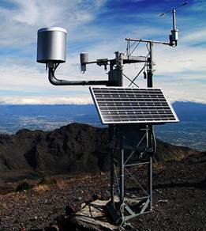

Stație meteorologică reprezintă un ansamblu de clădiri și instalații aparținând rețelei hidrometeorologice în care se fac observații directe asupra fenomenelormeteorologice, climatice și hidrologice de bază și o prelucrare primară a datelor.
Stațiile meteorologice tipice au următoarele instrumente:

- Termometru utilizate pentru măsurarea temperaturii aerului atmosferic (ținute în adăposturi meteorologice);
- Barometru pentru măsurarea presiunii atmosferice;
- Higrometru pentru măsurarea umidității;
- Anemometru pentru măsurarea vitezei vântului;
- Girueta cu care se determină direcția și intensitatea vântului;
- Heliograf pentru măsurarea intensității strălucirii soarelui;
- Pluviometru și pluviograf pentru măsurarea precipitațiilor lichide, pe o anumită perioadă de timp.
Mai multe stații sofisticate pot măsura, de asemenea, indicele de ultraviolete, radiația solară, umiditatea vegetației, umiditatea solului, temperatura solului, temperatura apei în iazuri, lacuri, golfuri sau râuri și, ocazional, alte date.